AndroidでGlurooを
GlucoScopeへつなぐ
Google PlayでGlurooを入れてから、CGMのアカウントを接続し、GlucoScopeで表示を始めるまでを、赤枠付きの画面で案内します。
端末やGlurooの更新で、文言や順番が少し変わることがあります。近い名前の項目を探し、分からない医療設定は無理に変更しません。
始める前に用意するもの
- Googleアカウント
- 使用中のCGMに合う共有用アカウント
- 元のCGMアプリで、ご自身のデータを確認できる状態
大切な安全確認
CGMのパスワードはGlurooへだけ入力します。GlucoScopeへ入力するのは、後でGlurooに表示される「Nightscout URL」と「API Secret Token」の2つです。
URLとTokenは、メモ、メール、LINE、スクリーンショット、SNSへ保存・共有しないでください。
Glurooは外部サービスです
Glurooの提供状況、料金、利用条件、画面、接続方法は変わる可能性があります。GlucoScopeはGlurooとは別に運営されており、提携・推奨を示すものではありません。
第1章
Google PlayからGlurooを入れます
全31STEP中 1
「Play ストア」を押します
Androidのホーム画面で、三角形のマークがある「Play ストア」を1回押します。
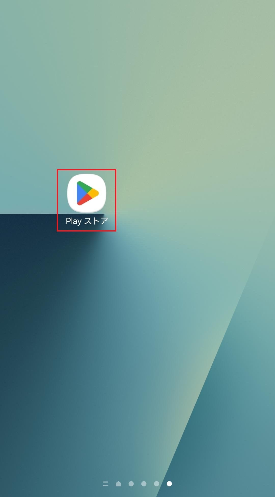
全31STEP中 2
「Gluroo」を検索して入れます
検索欄へ「Gluroo」と入力します。緑色のカンガルーのアプリと提供元「Gluroo Imaginations Inc.」を確認し、「インストール」を押します。
似た名前の別アプリを選ばないよう、アプリ名と提供元の両方を確認します。
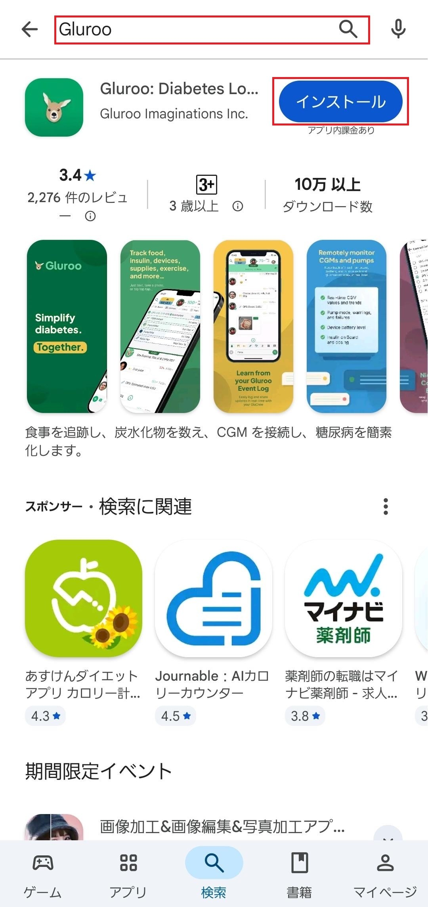
全31STEP中 3
「始めましょう」を押します
初めて使う場合は、白い枠の「始めましょう」を押します。
以前のGlurooアカウントへ戻る場合だけ「I already have an account」を使います。
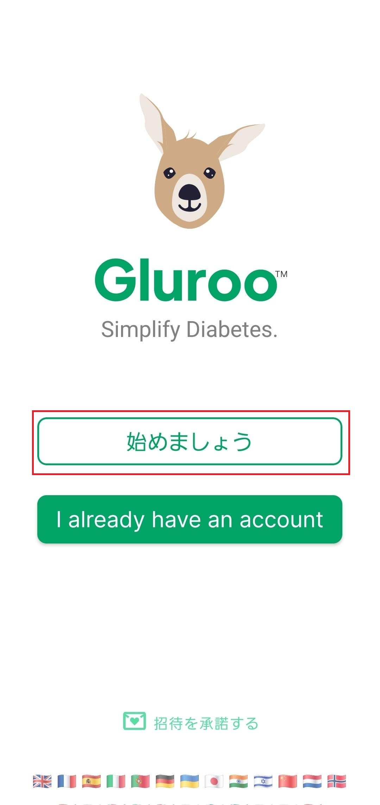
第2章
Glurooの初回設定を進めます
全31STEP中 4
誰のために使うか選びます
ご自身のデータを見る場合は「自分」を選び、下の「継続する」を押します。家族などを支える場合は、実際の関係に合う項目を選びます。
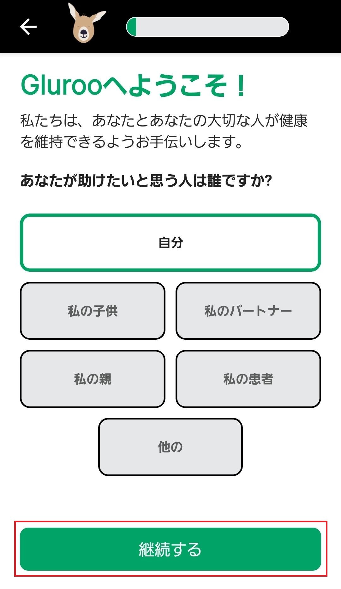
全31STEP中 5
必要なサポートを選びます
糖尿病の種類と診断からの期間を、ご自身の情報に合わせて選び、「継続する」を押します。
画像に合わせず、ご自身の内容を選んでください。
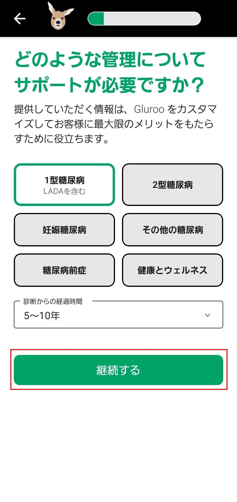
全31STEP中 6
説明を読んで進みます
血糖値、食事、運動、インスリンなどをまとめて記録できるという説明を確認し、「継続する」を押します。
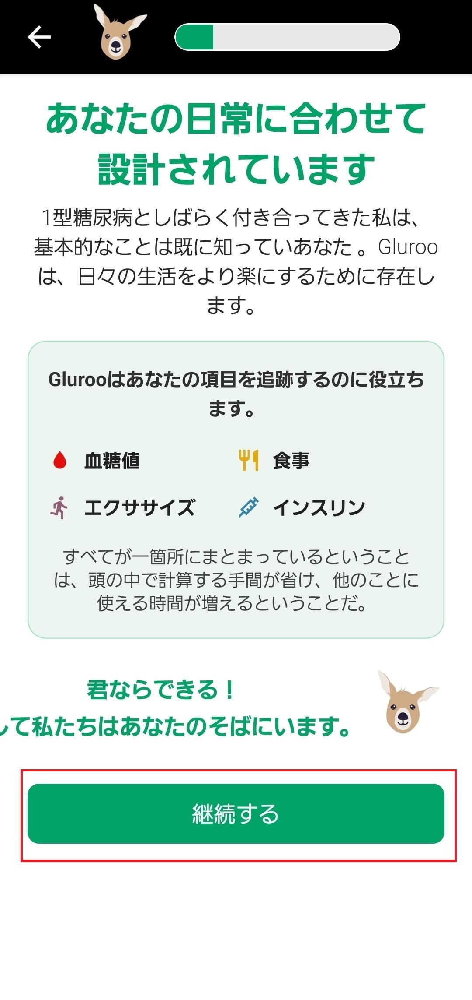
全31STEP中 7
プロフィールを入力します
ニックネーム、年、性別を、ご自身の内容で入力・選択し、「継続する」を押します。
確認用画像では、入力例を白く隠しています。
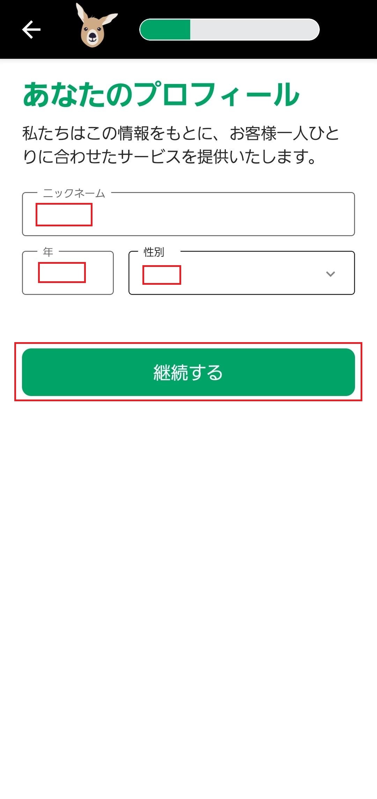
全31STEP中 8
Glurooで行いたいことを選びます
ご自身に合う項目を選び、「継続する」を押します。画像の項目をそのまま選ぶ必要はありません。
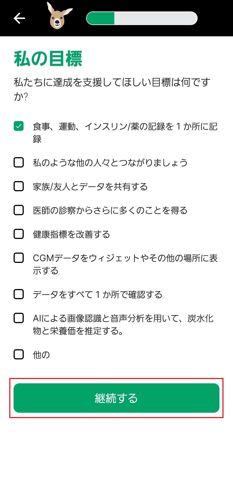
全31STEP中 9
通知の案内を確認します
通知を利用する場合は「通知をオンにする」を押し、Androidの確認画面でも許可します。あとでAndroidの設定から変更できます。
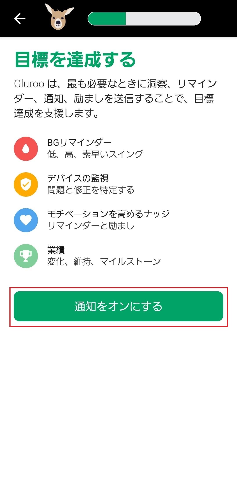
全31STEP中 10
使っているCGMを選びます
Libreを使っている方は「アボット フリースタイル リブレのバリエーション」、Dexcom G7を使っている方は「Dexcom G7｜One+」を選び、「継続する」を押します。
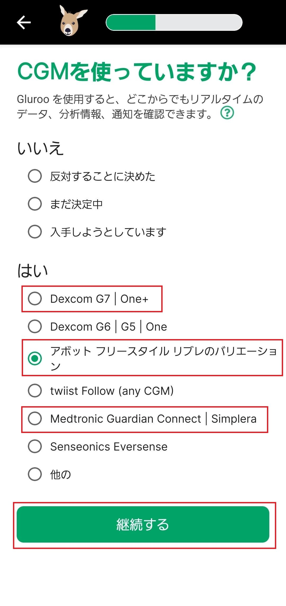
全31STEP中 11
ポンプやスマートペンについて答えます
使用中の機器があれば選びます。使用していない、または分からない場合は、実際の状況に合う「いいえ」の項目を選んで進みます。
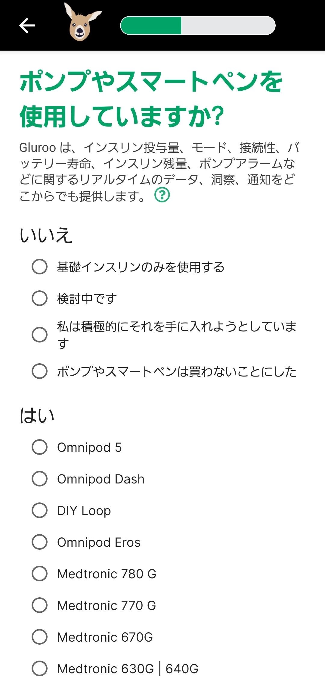
全31STEP中 12
「後で設定する」を押します
炭水化物比率やISFはここでは入力せず、画面下の「後で設定する」を押して進みます。
医療設定は主治医や医療機関の案内を確認してください。
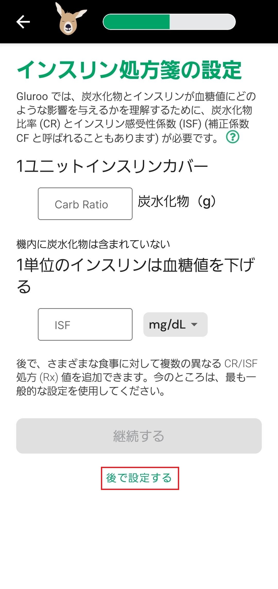
全31STEP中 13
「スキップして後でやる」を押します
この画面では服薬リマインダーを設定せず、「スキップして後でやる」を押して進みます。
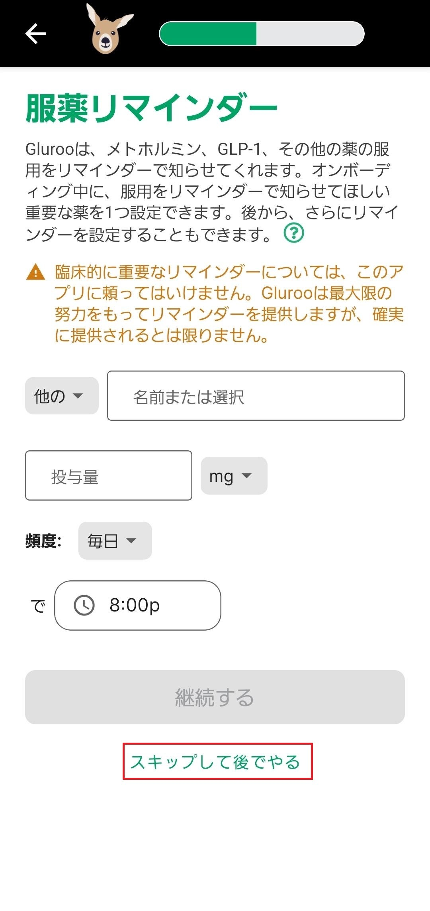
第3章
Googleログインと利用条件を確認します
全31STEP中 14
「Googleでログイン」を押します
説明を確認して黒いボタンを押し、次の画面でGlurooに使うご自身のGoogleアカウントを選びます。
アカウント一覧は個人情報を含むため、このガイドには掲載していません。
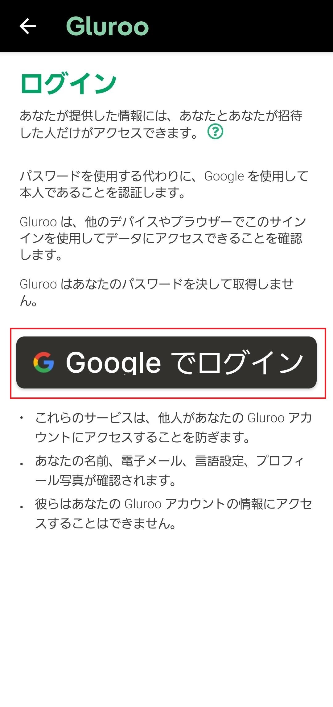
全31STEP中 15
「アクセス確認済みです！」を進めます
緑のチェックが表示されたらGoogleログインは完了です。「継続する」を押します。
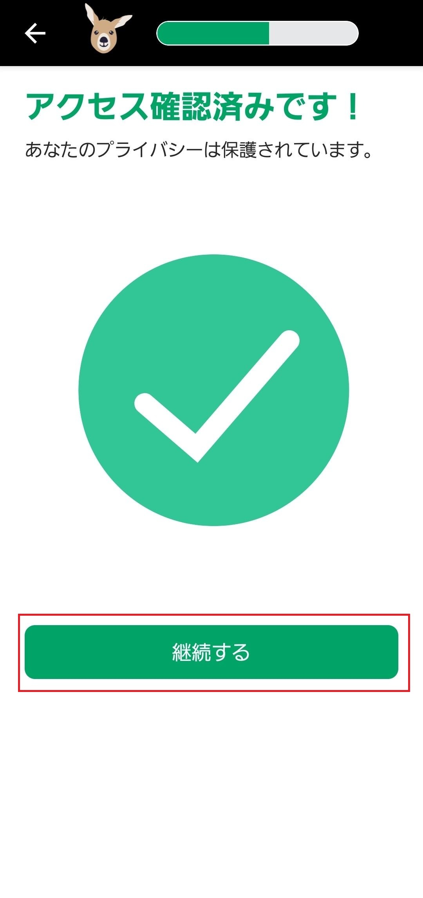
全31STEP中 16
4つの文書を開いて読みます
利用規約、プライバシーポリシー、医学的警告、健康データ処理をそれぞれ開き、内容を確認します。
内容に同意できる場合だけ次へ進みます。
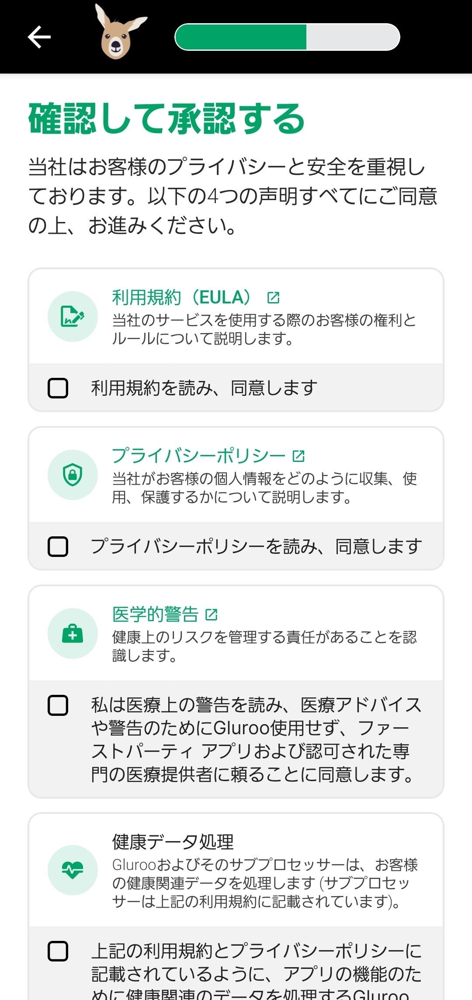
全31STEP中 17
4つにチェックして続けます
内容に同意できる場合は4つのチェック欄を選び、「同意して続行」を押します。
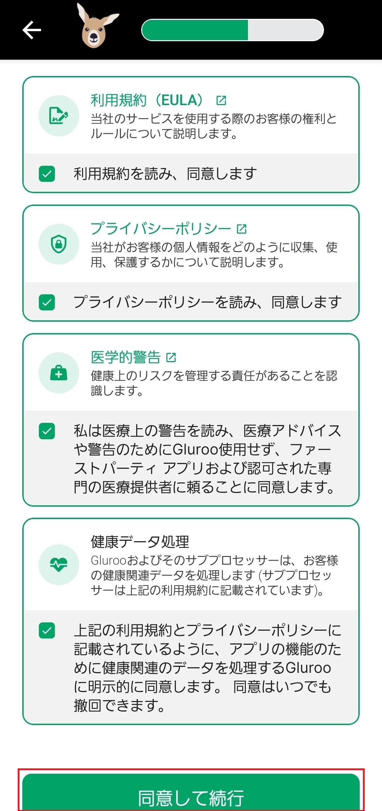
全31STEP中 18
バックグラウンド動作を許可します
案内に沿ってAndroidの「アプリのバッテリー使用量」を開き、「無制限」を選びます。今行わない場合は「これは後で行います」で進めます。
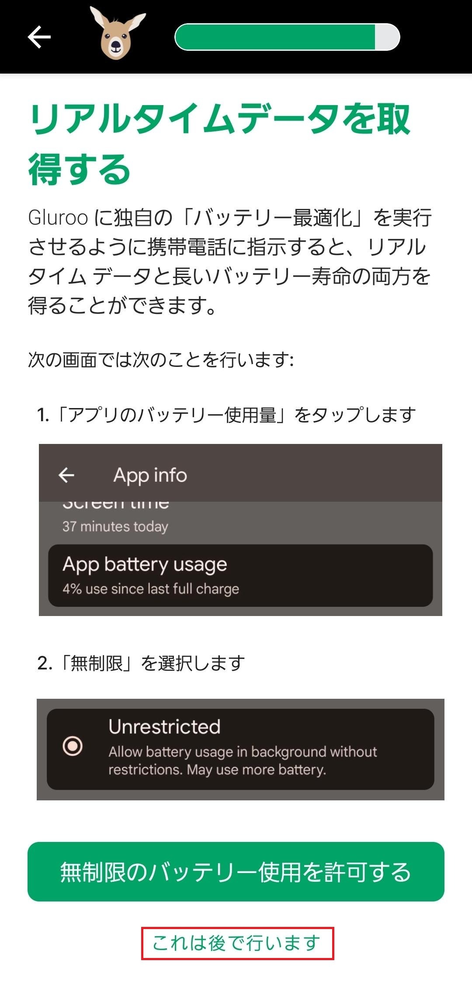
全31STEP中 19
Glurooで使うニックネームを入力します
ほかの人を追加したときに表示されるニックネームを入力し、「継続する」を押します。本名でなくても大丈夫です。
確認用画像ではニックネームを白く隠しています。
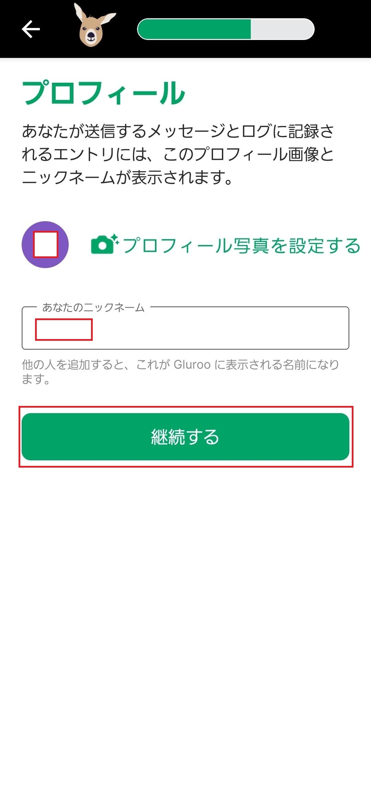
第4章
CGMのアカウントをGlurooへつなぎます
全31STEP中 20
共有用アカウントを入力します
Libreを選んだ場合は、LibreLinkUpへ登録したメールアドレスとパスワードを入力します。Dexcom G7を選んだ場合は、Dexcom Shareの準備を先に行います。
Googleアカウントではなく、選んだCGMの共有用アカウントです。GlucoScopeへは入力しません。
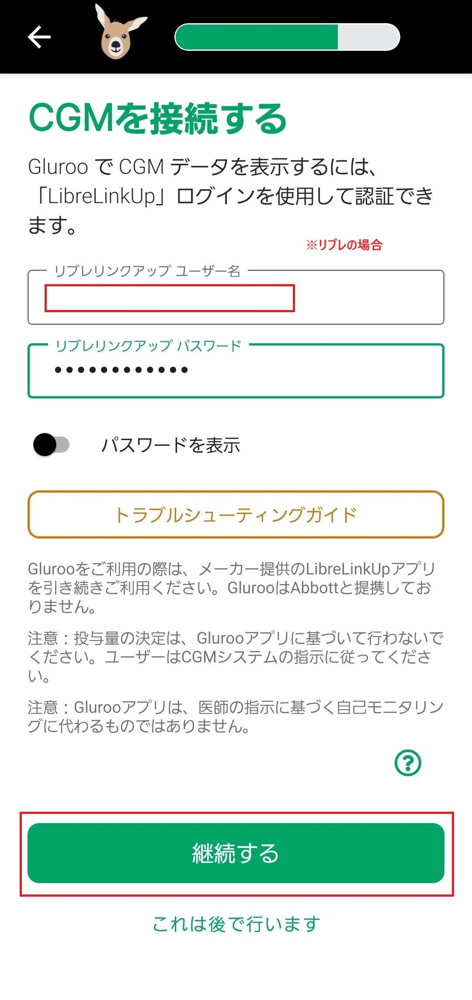
全31STEP中 21
「CGMが接続されました！」を確認します
接続完了の表示が出たら「継続する」を押します。データが届くまで少し時間がかかる場合があります。
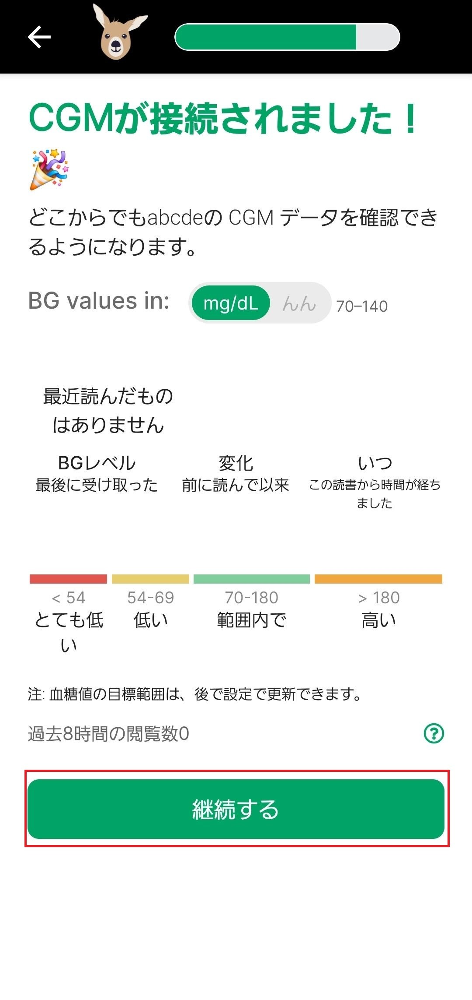
全31STEP中 22
「これは後で行います」を押します
A1Cはここでは入力せず、画面下の「これは後で行います」を押して進みます。
A1CはGlurooの設定から後で入力できます。
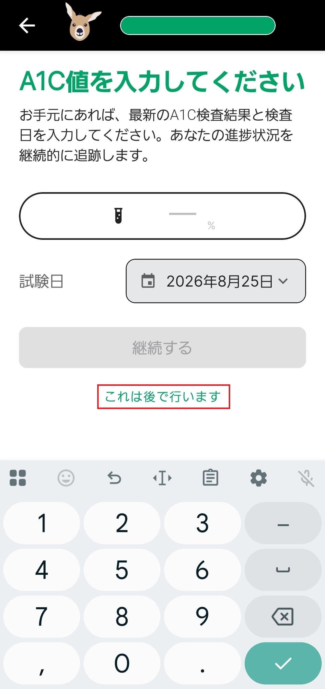
全31STEP中 23
「準備完了！」を進めます
「準備完了！」が表示されたら、「継続する」を押します。
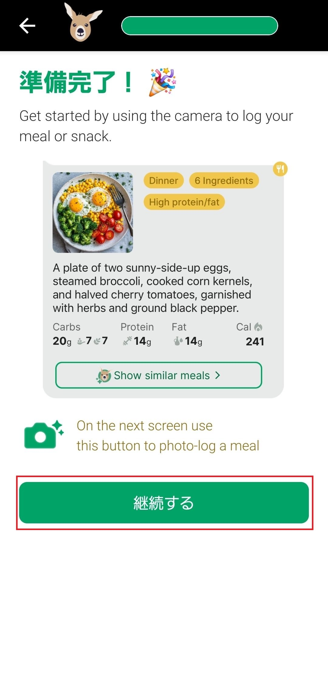
第5章
Glurooの接続情報をGlucoScopeへ移します
全31STEP中 24
左上の三本線を押します
Glurooのホーム画面が開いたら、左上にある三本線のメニューボタンを押します。
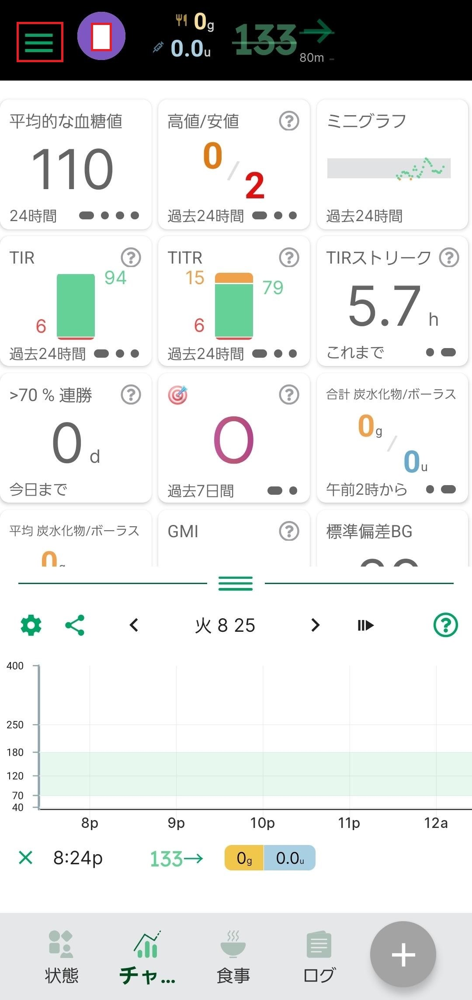
全31STEP中 25
「設定」を押します
メニューが開いたら、いちばん上の歯車の印がある「設定」を押します。
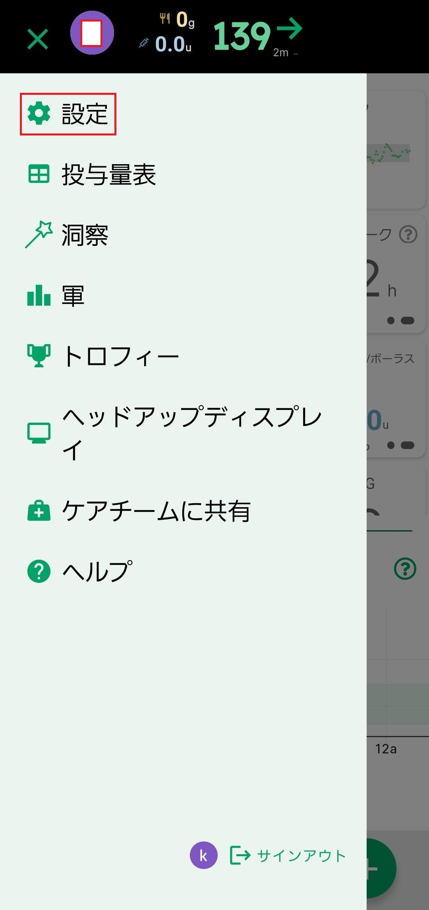
全31STEP中 26
「グルローグローバルコネクト ナイトスカウト」を押します
設定画面を下へ動かし、「その他の統合」にある赤枠の項目を押します。
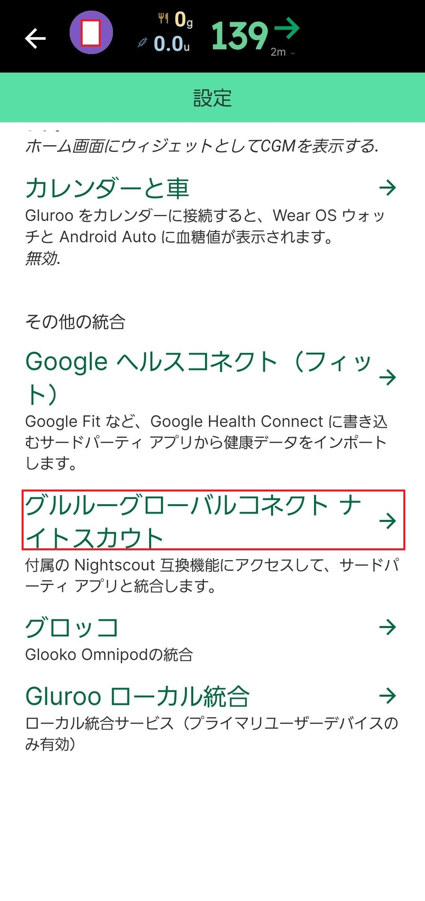
全31STEP中 27
上の「コピー」を押します
グルローグローバルコネクトが開いたら、画面上部にある赤枠の「コピー」を押します。
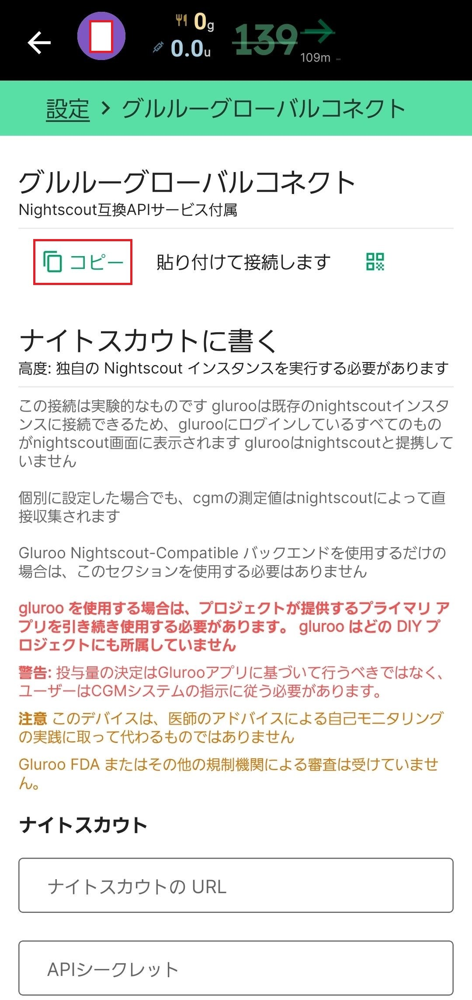
全31STEP中 28
説明を確認して枠の外を押します
「NS 互換 URL」の説明が開きます。今回は個別のJSON・XDrip+・Nightguard・Notesは使わないため、説明枠の外側を押して閉じます。
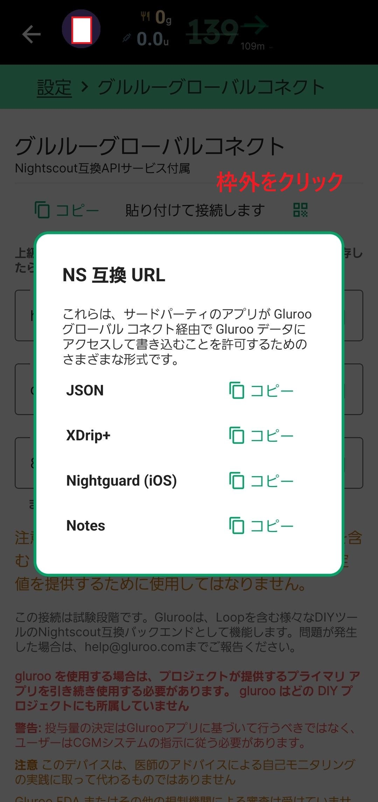
全31STEP中 29
URLとTokenを1つずつ直接貼ります
各欄の右側にあるコピー印を押し、GlucoScopeへ直接貼り付けます。
「API Secret Header (SHA1)」は使いません。
コピーしたらメモへ保存せず、GlucoScopeへ直接貼ります。次にGlurooへ戻り、もう1項目をコピーします。
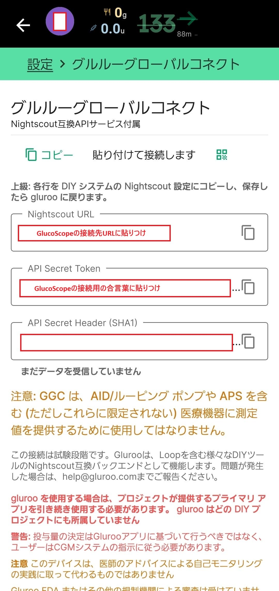
全31STEP中 30
2つの接続情報を確認して接続します
「接続先URL」へNightscout URLを、「接続用の合言葉」へAPI Secret Tokenを貼ります。「この端末に保存する」は、普段使うご自身の端末だけで選びます。
入力できたら「接続してGlucoScopeを始める」を1回押し、そのまま少し待ちます。
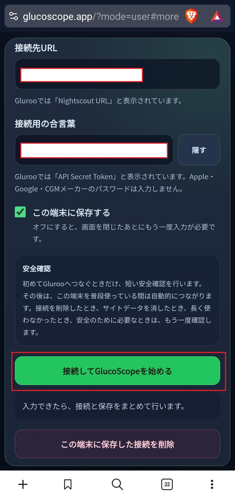
全31STEP中 31
最新のデータが表示されたら完了です
現在の血糖値と矢印がGlucoScopeに表示されたら接続できています。数値やグラフは利用する方によって異なります。
最新のアラートや機器状態は、元のCGM・ポンプアプリを確認してください。
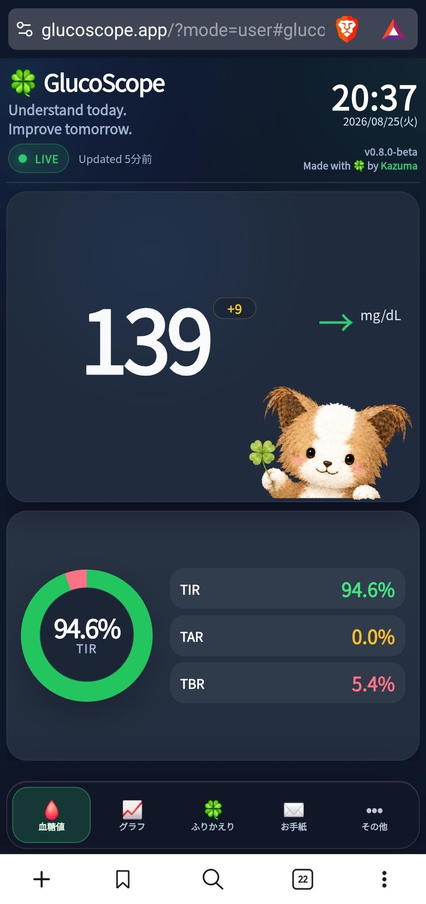